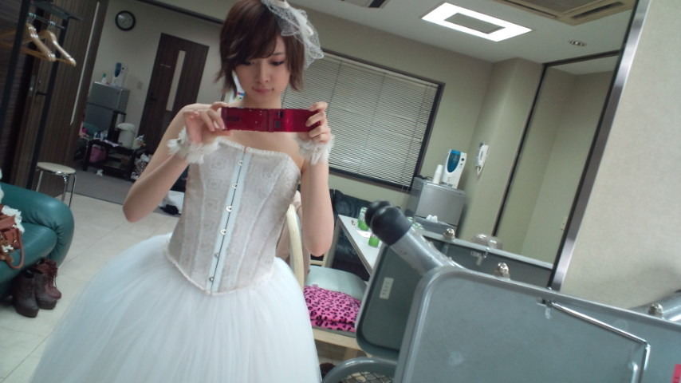

| 2012/02 24 Fri | 橋本奈々未 (´_ゝ｀) 肩こりを和らげる |
こんばんは！橋本です！
今お風呂に浸かってます...
はぁ...毒素出て行けー！笑
今日はですね、Type-Bに収録されている
私の個人PVについて
振り返ってみようかなと思います！
まず、最初に個人PVと聞いて
「？」となったんですが
33人それぞれ違う監督に撮ってもらうと聞き
(*゜▽゜*)なんてすごいの！！
と びっくり＆畏怖。
しかも蓋を開けると
私の監督さんはあの三木聡さん。
もう、どうしようと思いました。笑
友達にとても羨ましがられました。笑
そしてカメラさんは
私の大好きなアヒルと鴨のコインロッカーの
小松高志さんでした。
もう、私、いつも強張ってる顔が
尚更強張るようでした...(;_;)笑
109カットを２日間で撮って戴きました。
三木さんに
「この撮影を越えれば
他にどんな仕事きても余裕だよ」
と言われた意味、今噛みしめてます。
私が８月から半年間の間に
やらせて戴いたお仕事の中で
一番きつくて、強くなれたお仕事でした。
本当に本当に楽しかったです。
でも実際のところ、
ブルマとお風呂のシーンは
かなり恥ずかしかったです(>_<)笑
あと、冒頭部分の寝起きのシーンは
ホントに朝早くに撮影した
すっぴん寝起き顔で...
初っ端からすみませんって感じです。うぅ
そしてナレーションは
私のテンションMAXの声です。えへへ
こんな私を支えて、協力してくださった
今回のPVに携わる全てのスタッフの皆様
本当にありがとうございました！！
いつか私の実力で
また一緒にお仕事ができたら嬉しいです。
そしてType-Cに収録されている
「失いたくないから」のPV
みなさんチェックして戴けたでしょうか？(o^_^o)
ペペぺぺイッ

衣装めっちゃ可愛いんですよー！！(T^T)
セットもとっても綺麗で素敵で...
失いたくないからは
乃木坂46のデビューまでを
追ったようなものにっているのかな
と私は思います！
夜遅くにすみませんでした(つд｀)
今日もお疲れさまです！
おやすみなさい☆☆